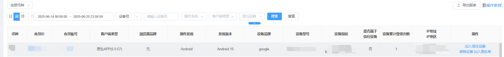

1，加入信任设备： 操作以后该设备就是会员的信任设备
2，移除设备/批量移除设备：将会员从当前设备踢出，并清除当前设备的登录记录，下次登录需要手动输入账密登录；
3，加入黑名单/批量加入黑名单：将会员从当前设备踢出，并将当前设备号拉入黑名单。
拉入黑名单注意事项：
设备管理界面拉黑设备的时候默认同时限制注册和登录；
如果拉黑的某个设备不存在设备黑名单则拉黑后直接限制登录和注册；
如果拉黑的某个设备在设备黑名单的限制类型是注册/登录，则拉黑后同时限制注册和登录
如果拉黑的某个设备在设备黑名单的限制类型是同时限制注册和登录，则拉黑的时候提示记录已存在
4，登设备管理展示的数据：登录以后没有手动退出的都会显示（即会员在线登录设备管理）
5，是否属于信任设备条件：根据安全中心配置设备信任开关或者操作加入信任设备
6，设备累计登录次数：登录一次手动退出一次才算一次
